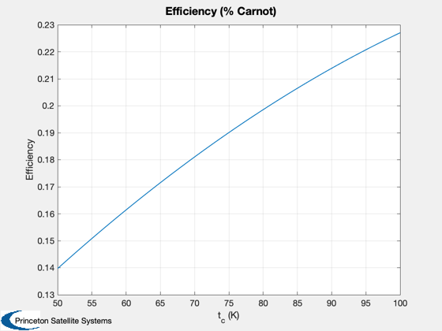
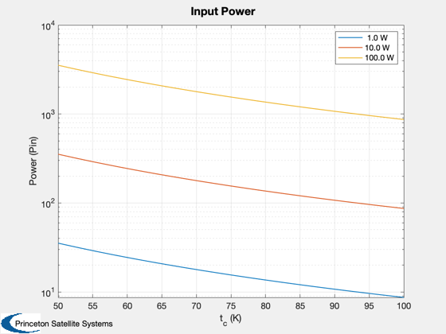
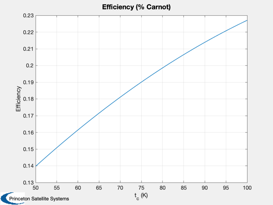
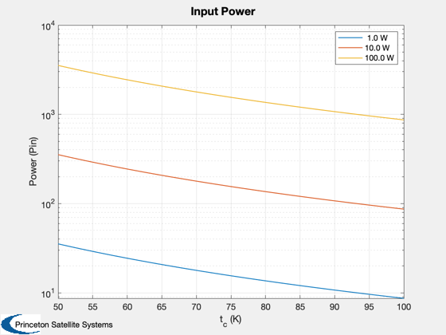

Cryocooler analysis
Plots for three values of lift heat from 50 to 100 K cold temperature.
%-------------------------------------------------------------------------- % See also: Cryocooler, Plot2D %-------------------------------------------------------------------------- %-------------------------------------------------------------------------- % Copyright (c) 2018 Princeton Satellite Systems, Inc. % All rights reserved. %-------------------------------------------------------------------------- tC = linspace(50,100); % K qC = [1 10 100]; % W n = length(qC); m = zeros(n,length(tC)); eff = m; Pin = m; l = cell(3,1); for k = 1:n [m(k,:), eff(k,:),cOP] = Cryocooler( qC(k), tC ); Pin(k,:) = qC(k)./cOP; l{k} = sprintf('%4.1f W',qC(k)); end Plot2D(tC,m,'t_c (K)','Mass (kg)','Cryocooler Mass','ylog'); legend(l) Plot2D(tC,eff(1,:),'t_c (K)','Efficiency','Efficiency (% Carnot)'); Plot2D(tC,Pin,'t_c (K)','Power (Pin)','Input Power','ylog'); legend(l) if 0 PrintFig(1,4,1,'CryoMass'); PrintFig(1,4,2,'CryoEff'); end %--------------------------------------
  
 